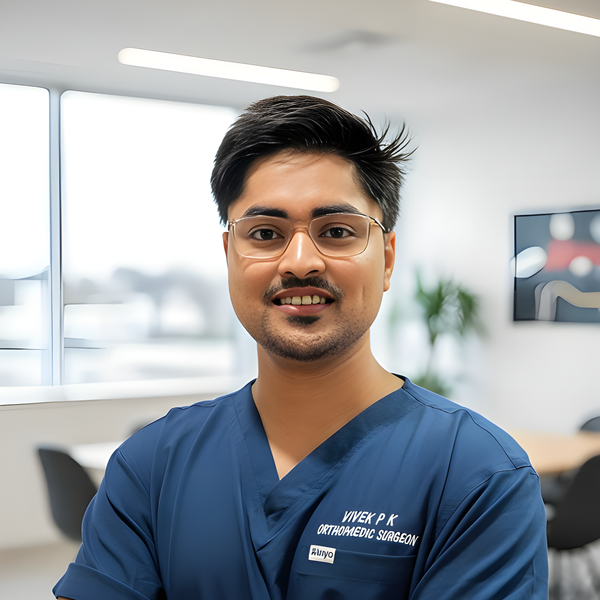
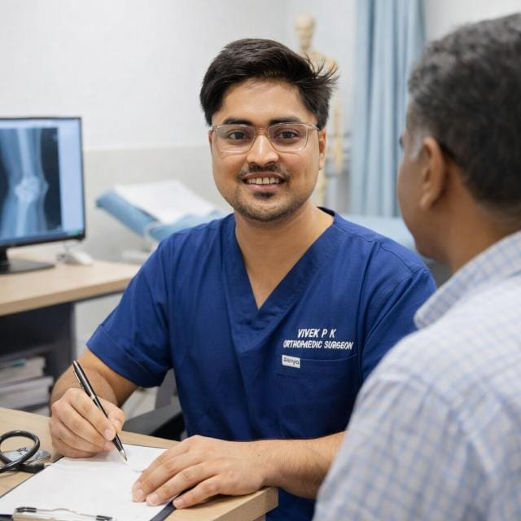
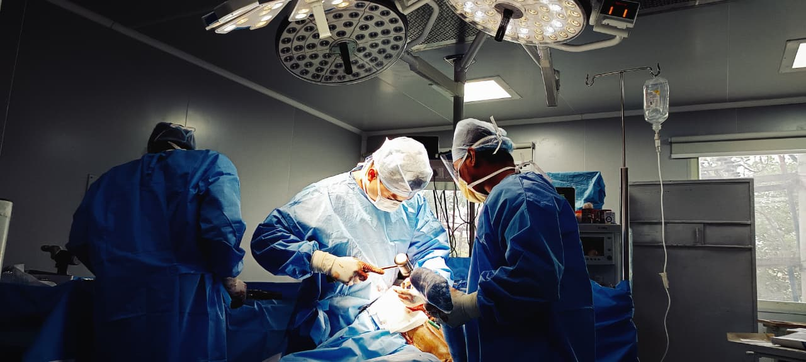
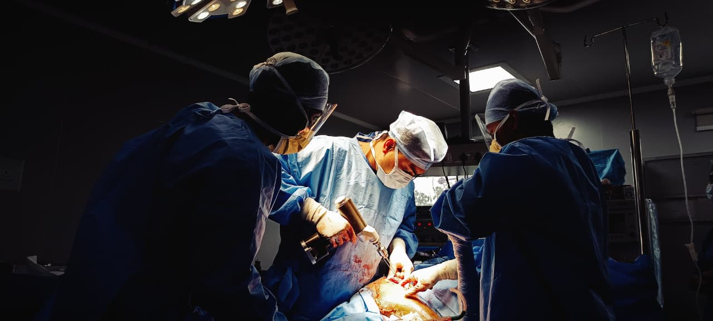
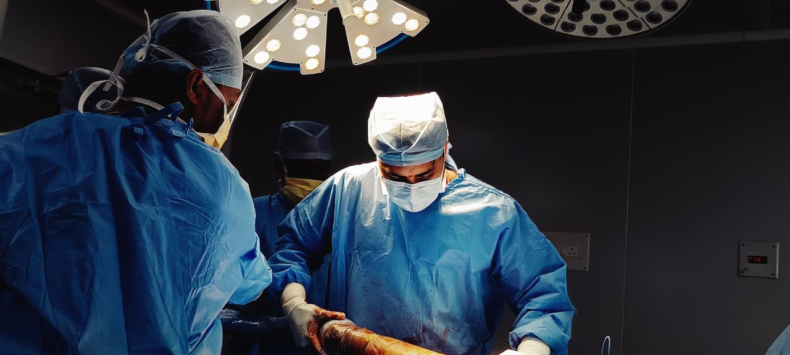
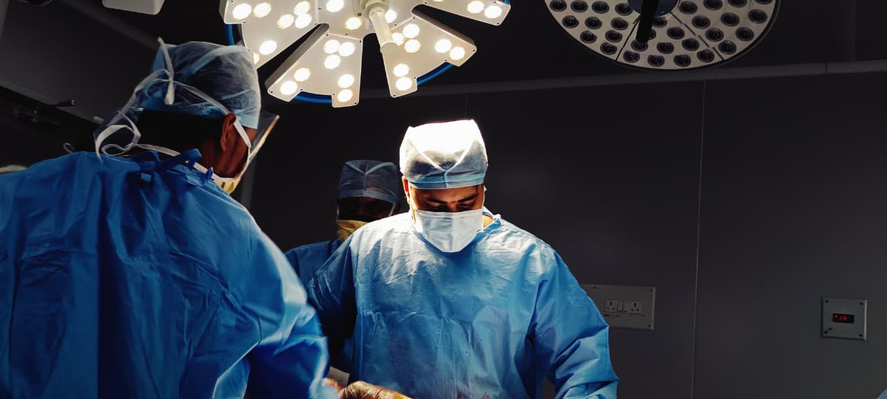

Eight years in trauma, arthroplasty, arthroscopy and reconstructive orthopaedics, trained at PGIMER Chandigarh and AIIMS New Delhi. Over 1,600 procedures performed across joint replacement, arthroscopy and complex trauma, with an active research record of 15 peer-reviewed publications.

Dr. Vivek P Ksheerasagar is an orthopaedic surgeon based in Bangalore, practising across trauma, arthroplasty, arthroscopy and reconstructive orthopaedics. His training spans two of India's leading tertiary referral centres — the Post Graduate Institute of Medical Education and Research (PGIMER), Chandigarh, and the All India Institute of Medical Sciences (AIIMS), New Delhi.
His operative experience covers over 1,000 trauma surgeries across the upper limb, lower limb and pelvi-acetabular region, more than 500 joint replacement procedures spanning primary, complex primary, revision, robotic and conventional techniques, and over 100 knee, shoulder and ankle arthroscopic procedures.
Alongside clinical practice, he maintains an active academic profile with 15 peer-reviewed publications in indexed journals, continued involvement in ongoing research studies, and regular participation in teaching, journal clubs and conference presentations.

Clinical focus areas built through dedicated subspecialty rotations at PGIMER and AIIMS, and continued in independent consultant practice.
Primary, complex primary and revision joint replacement of the hip, knee, shoulder and elbow, including robotic and conventional techniques.
Knee, shoulder and ankle arthroscopy including ACL, PCL and multi-ligamentous knee reconstruction, shoulder Bankart repair, rotator cuff repair and SLAP tears.
Upper limb, lower limb and pelvi-acetabular trauma, managed independently across ER, ICU/HDU and multidisciplinary inpatient care.
Complex pelvic and acetabular trauma reconstruction, including revision arthroplasty following failed index surgery.
Management of non-union and malunion, including corrective osteotomy and Ilizarov-based reconstruction techniques.
Diagnosis and surgical management of bone tumours, developed through dedicated paediatric and reconstructive orthopaedic training.
Completed dedicated rotational training across four orthopaedic subspecialties over 41 months, at a high-volume tertiary referral centre.
Independent management of trauma and emergency cases including ICU/HDU patients, with exposure to upper limb, lower limb, pelvi-acetabular trauma and foot & ankle injuries.
Assisted and performed independently in primary, complex primary and revision hip, knee, shoulder and elbow arthroplasty.
Exposure to paediatric trauma and deformity correction at an Advanced Paediatric Centre.
Independent hands-on experience in ACL, PCL and multi-ligamentous knee reconstruction, shoulder Bankart repair, rotator cuff repair and SLAP tear surgery.
Moments from live surgery, across arthroplasty, trauma and arthroscopic procedures.




A record of peer-reviewed publications, book chapters and case reports across arthroplasty, trauma and paediatric orthopaedics, indexed below by subject.
For a consultation at Kauvery Hospital, Electronic City, book directly through the hospital's appointment page or message on WhatsApp. Alternatively, share your details below and the clinic will confirm a slot.